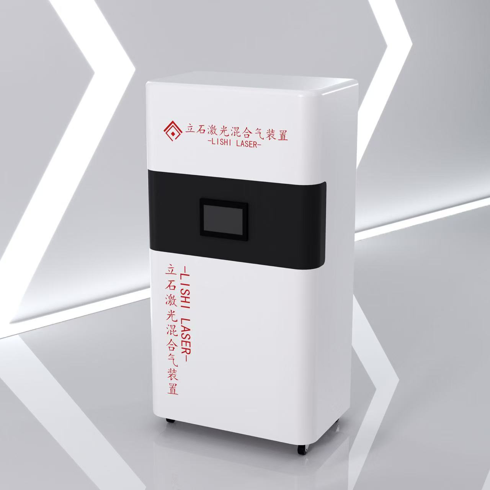

El Dispositivo de Gas Mixto LISHI LASER ofrece corte con micro-oxígeno para máquinas láser de alta potencia (12KW–60KW). Sin rebabas, menor consumo de gas y velocidades de corte significativamente más rápidas.
Inversión desde ~$18,000 · Retorno típico: 6–12 meses · Un dispositivo sirve a dos láseres

Nuestro dispositivo mezclador de nitrógeno y oxígeno utiliza tecnología de corte láser con micro-oxígeno para producir un gas mixto N₂/O₂ con calibración precisa — eliminando rebabas en acero al carbono mientras entrega velocidades de corte 3× más rápidas que el corte con oxígeno tradicional. Diseñado para máquinas láser de alta potencia de 12kW a 60kW.
Materias primas almacenadas en tanques, presión 20–25 bar
Convierte gases líquidos a forma gaseosa
Presión estable + mezcla proporcional → N₂ 95% / O₂ 5%
Salida: 12–16 bar, caudal hasta 200m³/h
Entrada: N₂ + O₂ a 20–25 bar. Salida: pureza N₂ ~95%, presión 12–16 bar, caudal máximo 200m³/h. Tanque de gas compacto (capacidad >3m³).
800mm × 350mm × 1100mm, peso 90kg. Un equipo soporta dos máquinas láser simultáneamente (configuración Uno a Dos).
Alta velocidad de corte + sin rebabas. Después de la instalación, ajustar la proporción entre N₂ 95% y O₂ 5% para diferentes espesores. Programa integrado analiza la proporción de uso y registra requisitos de pureza.
Compatible con todas las marcas principales: HAN'S, DNE, PENTA, LEAD, HSG y más. Funciona con BODOR, KIMLA, MESSER y otras marcas globales.
Reduzca el consumo de nitrógeno en un 33% mientras elimina rebabas en el corte láser de acero al carbono. Nuestro sistema de suministro de gas sin mantenimiento es compatible con Han's laser, DNE, PENTA, LEAD, HSG, BODOR y otras marcas principales.
Aumente la velocidad de corte hasta 3× comparado con el corte con oxígeno. Ejemplo: acero de 8mm a 16m/min con gas mixto vs solo 2–3m/min con O₂.
A diferencia del corte con nitrógeno que produce rebabas en placas ≥8mm (12kW) o ≥10mm (20kW), el corte con gas mixto produce superficies limpias y sin rebabas en acero al carbono — sin necesidad de esmerilado secundario.
Reduzca el consumo de nitrógeno en un 33–50% comparado con el corte con N₂ puro. Comparando costos: gas mixto ahorra significativamente vs compresor de aire considerando operación sin mantenimiento.
Consumo de energía: solo 2 kWh / 24 horas. A diferencia de los compresores de aire que requieren cambios de filtro/aceite cada 3,000 horas, nuestro equipo de gas industrial láser es prácticamente libre de mantenimiento.
El único fabricante con equipo estable de gas mixto uno a dos. Una estación de mezcla de gas industrial alimenta dos máquinas láser de diferentes potencias simultáneamente.
Los compresores de aire generan riesgo de contaminación de aceite/agua que puede quemar las lentes protectoras de la cabeza láser ($5,000–$50,000 de pérdida). Nuestra fuente de gas líquido puro mantiene su sistema óptico 100% seguro.
| Factor | Gas Mixto | O₂ (Oxígeno) | N₂ (Nitrógeno) | Aire |
|---|---|---|---|---|
| Velocidad de Corte | 3× más rápido (ej. 16m/min @ 8mm CS) | 2–3m/min @ 8mm CS | Similar a gas mixto | 30% más lento que gas mixto |
| Superficie de Corte | Suave, sin rebabas | Oxidada, bordes ásperos | Puede tener rebabas en placas gruesas | Contaminada, áspera |
| Consumo de Gas | 1/3 menos que N₂ | Total similar | Alto | Muy alto (compresor) |
| Costo de Energía | 2 kWh/24h | Alto | Alto | Muy alto (compresor) |
| Perforación de Agujeros Pequeños | Algunas rebabas durante perforación | Mejor para agujeros pequeños | Bueno | Malo |
| Protección del Equipo | Sin contaminación de tuberías | Estándar | Estándar | Riesgo de contaminación de lente |
Vea cuánto puede ahorrar con la tecnología de gas mixto LISHI LASER. Reduzca el consumo de nitrógeno, elimine rebabas en acero al carbono y aumente la velocidad de corte — todo en un dispositivo mezclador de gas sin mantenimiento.
Velocidad de Corte
Velocidad de Corte
Aumento Anual Estimado de Ganancias
$0
Límite superior teórico basado en sus datos. Los resultados reales dependen de la mezcla de trabajos, eficiencia de anidado y tiempo de actividad.
Obtenga datos de corte detallados adaptados a su configuración de láser de 12KW–60KW.
O contáctenos directamente: WhatsApp +52 557 208 0065
La mayoría elige compresor de aire por bajo costo inicial, pero tres costos ocultos reducen sus ganancias.
2 kWh/24h — casi sin mantenimiento
~$73/año en electricidad
Superficie plateada-blanca, cero rebabas
Listo para entrega inmediata
100% seguro — fuente de gas líquido puro
Riesgo óptico cero
Mientras el aire parece gratis, su costo real está en mantenimiento, retrabajo y reemplazo de lentes. Gas mixto cuesta menos a largo plazo — y entrega calidad superior.
Rango óptimo de espesor de corte de acero al carbono para cada nivel de potencia láser. Gas mixto ofrece corte constante de alta velocidad en todos los espesores.
| Thickness | Mixed Gas Speed |
|---|---|
| 6mm | ~18 m/min |
| 10mm | 4.5–5 m/min |
| 12mm | ~4 m/min |
| 16mm | 3–4 m/min |
Mejor para acero al carbono ≤16mm
| Thickness | Mixed Gas Speed |
|---|---|
| 2mm | 22 m/min |
| 6mm | 18 m/min |
| 8mm | 16 m/min |
| 10mm | 12–14 m/min |
| 12mm | 10–12 m/min |
| 16mm | 5–6 m/min |
| 20mm | 3–4 m/min |
| 25mm | 2.5–3 m/min |
Mejor para acero al carbono ≤25mm
| Thickness | Mixed Gas Speed |
|---|---|
| 8mm | ~16 m/min |
| 10mm | ~12 m/min |
| 12mm | ~10 m/min |
| 16mm | ~8 m/min |
| 20mm | ~5.6 m/min |
| 25mm+ | Contáctenos |
Mejor para acero al carbono ≤30mm
Potencias más altas (40KW, 60KW) disponibles. Contáctenos para parámetros detallados.
Ver Todos los Parámetros →Imágenes reales de usuarios finales en todo el mundo. Sin exaggeración — datos reales, rendimiento real.
Configuración de doble potencia, una máquina alimenta dos — 33% menos gas, sin compromiso en velocidad
Gas mixto para láseres de alta potenciaPlacas gruesas, sin rebabas. 10–14 m/min en 10mm, antes solo alcanzable con O₂
Corte gas mixto alta potenciaCorte ultra-grueso a 3.5 m/min. Donde N₂ falla, gas mixto entrega
Gas mixto ultra-alta potenciaBordes de aluminio lisos, sin oxidación. Más rápido que aire, más limpio que N₂
Corte aluminio gas mixtoCorte de aluminio de precisión con micro-oxígeno — velocidad y calidad en una pasada
Aluminio delgado gas mixtoAluminio ultrafino, cero quemado. Gas mixto permite lo que N₂ no puede
Corte aluminio delgado precisiónDesde megafactorías costeras hasta talleres del interior, la tecnología de gas mixto ya alimenta cortadores láser en cuatro continentes — y la presencia crece cada trimestre.
Asociaciones de distribuidor exclusivo disponibles en regiones selectas. Envíe un contenedor, construya su mercado.
Un dispositivo de gas mixto mezcla con precisión nitrógeno líquido (N₂) y oxígeno líquido (O₂) en una mezcla calibrada N₂/O₂ (típicamente 95%/5%). Esta mezcla micro-oxígeno se usa como gas auxiliar en corte láser de alta potencia, ofreciendo 3× más velocidad de corte en acero al carbono comparado con oxígeno puro, mientras elimina las rebabas por completo.
Sí. El Dispositivo de Gas Mixto LISHI LASER funciona con todas las marcas principales: HAN'S, DNE, PENTA, LEAD, HSG, BODOR, KIMLA y MESSER. Soporta máquinas de 12kW a 60kW. Si su máquina usa conexiones estándar de gas auxiliar, es compatible.
El rango de corte depende de la potencia del láser: 12kW corta hasta 16mm de acero al carbono, 20kW hasta 25mm, 30kW hasta 30mm y 60kW hasta 40mm. También corta acero inoxidable y aluminio con excelentes resultados.
El gas mixto reduce el consumo de nitrógeno en un 33–50% comparado con corte N₂ puro. Además, el dispositivo consume solo 2 kWh por 24 horas — prácticamente sin mantenimiento. Use nuestra calculadora ROI arriba para estimar sus ahorros específicos.
No. A diferencia de los compresores de aire que necesitan cambios de filtro/aceite cada 500–3,000 horas, el dispositivo LISHI es libre de mantenimiento. Usa fuentes de gas líquido puro sin piezas móviles que se desgasten. El consumo es solo 2 kWh/24h.
Sí. LISHI LASER es el único fabricante que ofrece una configuración Uno-a-Dos estable. Una estación de mezcla puede alimentar simultáneamente dos máquinas láser de diferentes potencias (ej. una de 12kW y otra de 20kW).
El corte con aire produce bordes oxidados y ásperos, con riesgo de contaminación por aceite/agua que puede quemar las lentes del cabezote láser ($5,000–$50,000). El gas mixto produce superficies lisas, sin rebabas y plateadas, con cero riesgo de contaminación — y un 30% más rápido que el aire.
La instalación es sencilla y típicamente se completa en un día. El equipo se conecta a su suministro de gas líquido existente y a su máquina láser. Proporcionamos guías de instalación detalladas y soporte técnico remoto para todos los clientes.
Implementaciones reales. Datos reales. Resultados reales.
Un importante fabricante de chapa metálica actualizó cuatro láseres BODOR con gas mixto LISHI. La velocidad de corte pasó de 2.3 m/min a 7.1 m/min. El departamento de rectificado pasó de 6 trabajadores a cero.
Leer caso completo →Láser PENTA de 30kW combinado con dispositivo de gas mixto LISHI. Alcanzó 16 m/min en 8mm, 9.3 m/min en 12mm — todo sin rebabas. "Corte extremadamente limpio" según el ingeniero in situ.
Leer caso completo →Conecte un equipo a su máquina láser y comience a cortar 3× más rápido hoy. Disponible para máquinas de 6KW–60KW.